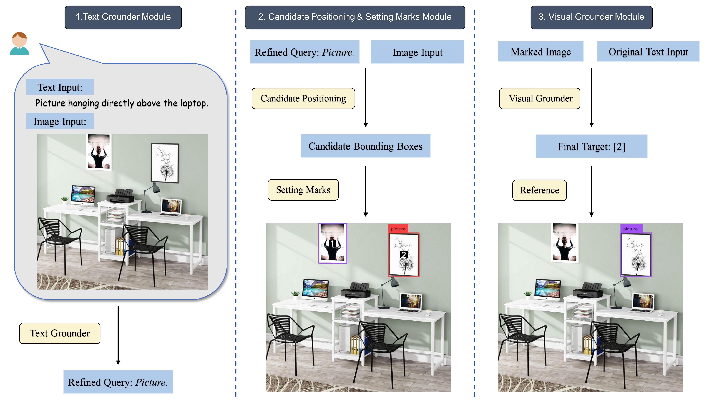
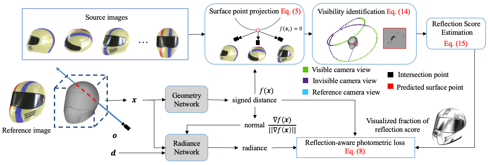
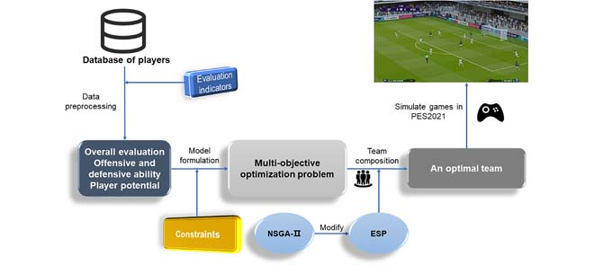

Haoyu ZHAO赵皓宇MPhil Student
AI Thrust, |
|
I'm a second-year MPhil student at AI Thrust, Information Hub, Hong Kong University of Science and Technology, Guangzhou, advised by Prof. Ying-Cong Chen. Before that, I received my Bachelor's degree in Automation, Xiamen University.
My current research interests include Large Language Models (LLMs) and Computer Vision, with a particular focus on methodologies that use LLMs to empower Computer Vision research.
I am actively looking for a PhD position.
[07/2023] LLM-Optic: We released our new paper LLM-Optic, come and check it out!
[07/2023] Ref-NeuS: Our paper was selected as one of the Best Paper Candidates by ICCV PCs.
[07/2023] Ref-NeuS: One paper was accepted to ICCV 2023 (Oral).
Ref-NeuS: Ambiguity-Reduced Neural Implicit Surface Learning for Multi-View Reconstruction with Reflection
Wenhang Ge, Tao Hu, Haoyu Zhao, Shu Liu and Ying-Cong Chen
Proceedings of the IEEE/CVF International Conference on Computer Vision (ICCV), 2023
[IEEE/CVF]
[Code]
[Project Page]
[Oral, Best Paper Nomination]
Multi-objective Optimization for Football Team Member Selection
Haoyu Zhao, Haihui Chen, Shenbao Yu, Bilian Chen
IEEE Access, 2021
[Full Text]
[Code]
[Publication during Undergraduate Studies]
|  |
LLM-Optic: Unveiling the Capabilities of Large Language Models for Universal Visual Grounding
Haoyu Zhao, Wenhang Ge, Ying-Cong Chen.
Arxiv Preprint
|
|  |
Ref-NeuS: Ambiguity-Reduced Neural Implicit Surface Learning for Multi-View Reconstruction with Reflection.
Wenhang Ge, Tao Hu, Haoyu Zhao, Shu Liu, Ying-Cong Chen.
ICCV, 2023 [Oral, Best Paper Candidate]
|
|  |
Multi-objective Optimization for Football Team Member Selection.
Haoyu Zhao, Haihui Chen, Shenbao Yu, Bilian Chen.
IEEE Access, 2021 [Publication during Undergraduate Studies]
|
| 2023-2024 | Spring | Teaching Assistant in UCMP 6050 Cross-disciplinary Design Thinking |
| 2023-2024 | Fall | Teaching Assistant in RedBird MPhil Mentoring |